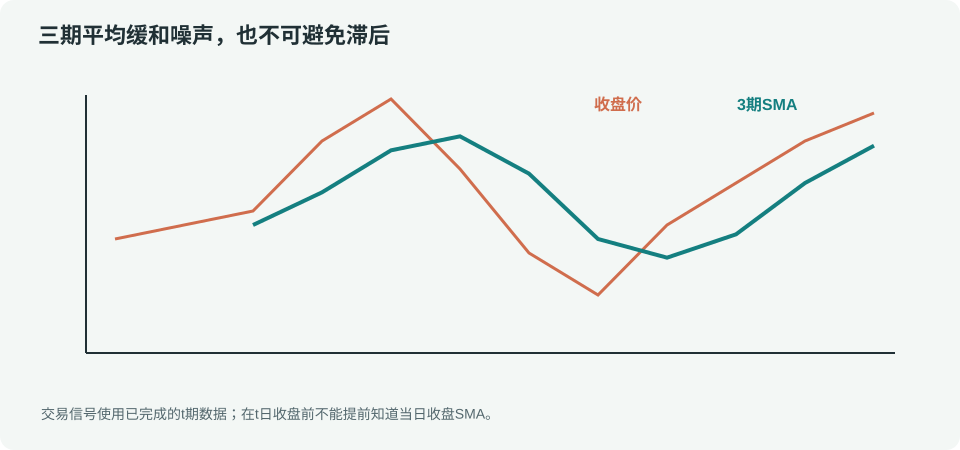
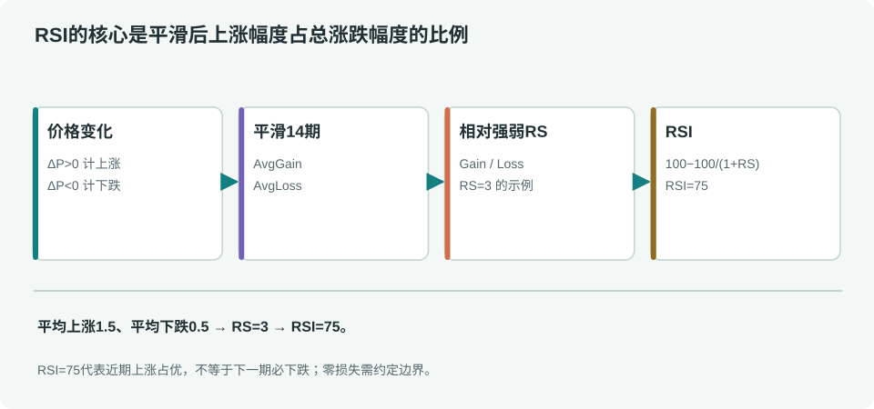

CHAPTER 14 · SIGNAL FILTERS
技术指标：均线、MACD、RSI与波动带
把公式写清楚后，信号的滞后、相关性、初始化与失效模式就可以被检验。
同一条价格曲线为什么会给出相互矛盾的指标？
价格连续上涨时，短期均线可能提示上行，RSI可能位于70以上，而某些较长周期指标还在等待确认。这并非指标“故障”：它们把同一段历史价格按不同窗口和算子加工，提取的特征不同。指标是历史数据的确定性变换，不会因画成彩色线而自动成为预测。
分析应从输入、公式、初始值、观察时点和失败情形开始，再谈信号有什么统计用途。几个由同一收盘价计算的指标高度相关，并不能因为“同时发出信号”就当作三个独立信息源。
SMA平滑短期噪声，也必然产生滞后
简单移动平均（SMA）在时间t取最近N个已完成周期的收盘价求平均。假设收盘价依次100、102、104、106、108，五期SMA=104。若价格突然下跌到90，SMA还包含前四期较高价格，不会像最新价格一样立刻跌到90。

常见“金叉”只表示特定短期均线首次超过长期均线。若试验多个窗口后挑出表现最好的一组，历史胜率还需要考虑参数选择和交易成本。
EMA是对历史值的递推平滑，初始化会影响结果
指数移动平均（EMA）使用递推关系：EMAₜ=α×Pₜ＋(1−α)×EMAₜ₋₁，其中常见α=2/(N+1)。N=12时α≈0.15385；它对较新数据给予更大权重，却仍依赖历史序列。第一项EMA以简单平均、首期价格或其他方式初始化，早期数值可能不同。
MACD：快慢EMA差、信号线和柱体的三个环节
常用设定为快EMA12、慢EMA26、信号EMA9。先令DIF=EMA12−EMA26，再令DEA=EMA9(DIF)，最终柱形= DIF−DEA。部分交易软件将柱形乘2；数值尺度会不同，但如果信号比较采用同样口径，穿越零线的时点不因常数放大改变。
快慢线相交描述的是两个不同速度平滑器的相对变化。若价格大幅跳空，MACD可能很快改变；若市场横盘，快慢线反复穿越也可能形成大量假信号。无论何种解释都应使用已完成K线，明确回测的信号时点和下一可交易时点。
RSI：涨跌幅度的相对平滑，不是超买必跌命题
Wilder RSI通常使用14期。先对每期涨跌取上涨部分max(ΔP,0)与下跌绝对部分max(−ΔP,0)，计算最初14期的平均上涨和平均下跌；随后按前一期均值×13/14＋当期涨跌幅/14递推。RS=AvgGain/AvgLoss，RSI=100−100/(1+RS)。
例如已经平滑得到AvgGain=1.5、AvgLoss=0.5，RS=3，则RSI=75。它表明近期正向变化比负向变化强，不能推断下一天必然回落。当平均下跌为0而上涨为正，RSI取100；两者均为0时不同系统会采用约定值或留空，必须明确。

布林带：标准差围绕滚动均值，并非恒定置信区间
常见布林带由N期SMA及上下k倍滚动标准差组成，例如N=20、k=2。不同平台可采用总体标准差或样本标准差，计算结果可能略有差异。若最近5期价格为100、102、104、106、108，总体标准差为√8≈2.83，若以k=2画教学带，中心104，上限≈109.66，下限≈98.34。这仅是5期简化例子，不是标准20期参数。
带宽反映近期波动大小。金融收益分布常出现厚尾、非独立性和波动聚集，因此不能因为上下带设为均值±2σ，就宣称价格有固定95%的概率在区间中。价格走出上轨也不等于马上回落。
组合指标之前，要先解决观察时点、相关性和成本
如果价格数据用于生成均线、MACD、RSI，三者的合取信号并不等同三个独立来源一致。如果把参数20日改成19日、RSI阈值70改成73后历史表现提升，要记录参数搜索规模，并进行样本外检验和交易成本压力测试。回测还需要处理股票停牌、涨跌停、拆股分红、成交量限制与生存者偏差。
| 指标 | 典型参数 | 主要研究边界 |
|---|---|---|
| SMA | 均值窗口N | 滞后，窗口内不含未来价格 |
| EMA/MACD | 12/26/9 | 递推初始化、柱体倍率、横盘假信号 |
| RSI | 14期Wilder | 平滑口径及零分母处理 |
| 布林带 | 20期、2×标准差 | 非正态、标准差样本口径、波动变化 |
检验
- 为什么第t期未收盘前计算出的日线SMA是临时值，而不能作已完成日线回测信号？
- MACD快慢线都来自收盘价，为何不能当成独立确认？
- AvgGain=1.5、AvgLoss=0.5时RSI多少？其预测边界是什么？
- 为什么均值±2σ不能被机械解释为95%的未来价格概率区间？
参考资料与指标口径
- StockCharts ChartSchool：SMA、EMA、MACD
- StockCharts ChartSchool：MACD Histogram
- StockCharts ChartSchool：Wilder RSI
- CFA Institute 2026：Backtesting and Simulation
- Schwab：Choosing Technical Indicators
图表不构成交易建议。